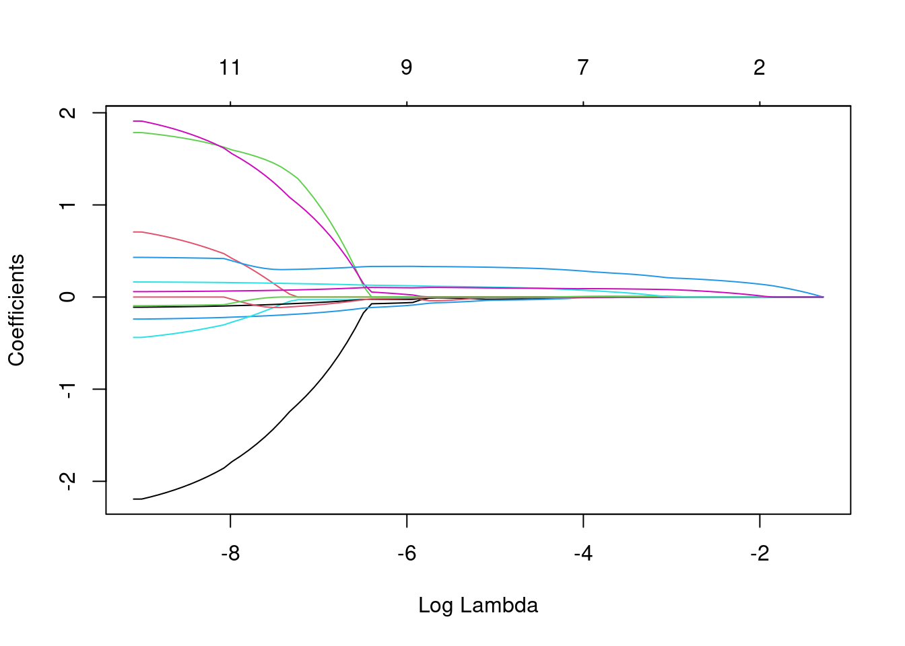

Sección 8 Caso Práctico Modelo QSAR: Regresión Lineal Múltiple
La relación cuantitativa entre estructura y actividad (QSAR, por sus siglas en inglés) es un enfoque de modelado en el campo de la química y la bioquímica que busca establecer relaciones cuantitativas entre las características estructurales (descriptores) de compuestos químicos y su actividad biológica. Los modelos QSAR representan una metodología fundamental en la investigación química y farmacológica. Estos modelos tienen la capacidad de predecir la actividad biológica de compuestos químicos en función de su estructura molecular, lo que los convierte en herramientas esenciales en el diseño y desarrollo de fármacos.
En el presente caso practico de modelado QSAR, los datos de partida se obtuvieron del artículo titulado “QSAR Study of (5-Nitroheteroaryl-1,3,4-Thiadiazole-2-yl) Piperazinyl Derivatives to Predict New Similar Compounds as Antileishmanial Agents” para ilustrar la predicción de la actividad antileishmanial de compuestos químicos. En dicho artículo, se llevaron a cabo estudios QSAR que incluyeron la regresión lineal múltiple (MLR), regresión no lineal (RNLM) y cálculos de redes neuronales artificiales (ANN) en una serie de 36 compuestos derivados tiadiazol. Lo enterior con el fin de identificar las características estructurales clave necesarias para diseñar nuevos candidatos principales potentes de esta clase.
Nos proponemos comparar los resultados obtenidos en nuestro ejercicio con los del mencionado artículo, implementando un modelo de regresion multiple con diferentes enfoques de seleccion de descriptores.
En el artículo se realizaron múltiples regresiones lineales utilizando el software XLSTAT versión 2013 para predecir los efectos sobre la actividad antileishmania. Nosotros implementaremos el desarrollo de los modelos con Tidymodels, un conjunto de paquetes de software en el lenguaje de programación R diseñado para simplificar y estandarizar el proceso de creación, ajuste y evaluación de modelos de aprendizaje automático. El proceso se divide en diversas etapas que abarcan desde la recopilación de datos hasta la selección de descriptores moleculares, la construcción del modelo y su validación.
## ── Attaching packages ────────────────────────────────────── tidymodels 1.1.1 ──## ✔ broom 1.0.5 ✔ recipes 1.0.8
## ✔ dials 1.2.0 ✔ rsample 1.2.0
## ✔ dplyr 1.1.3 ✔ tibble 3.2.1
## ✔ ggplot2 3.4.3 ✔ tidyr 1.3.0
## ✔ infer 1.0.5 ✔ tune 1.1.2
## ✔ modeldata 1.2.0 ✔ workflows 1.1.3
## ✔ parsnip 1.1.1 ✔ workflowsets 1.0.1
## ✔ purrr 1.0.2 ✔ yardstick 1.2.0## ── Conflicts ───────────────────────────────────────── tidymodels_conflicts() ──
## ✖ purrr::discard() masks scales::discard()
## ✖ dplyr::filter() masks stats::filter()
## ✖ dplyr::lag() masks stats::lag()
## ✖ recipes::step() masks stats::step()
## • Search for functions across packages at https://www.tidymodels.org/find/##
## Attaching package: 'readr'## The following object is masked from 'package:yardstick':
##
## spec## The following object is masked from 'package:scales':
##
## col_factor##
## Attaching package: 'MASS'## The following object is masked from 'package:dplyr':
##
## select8.1 Datos
Recopilación de datos
La información sobre la actividad antileishmanial experimental (\(pIC_{50}\) en μM) de 36 derivados de tiadiazol se ha recopilado de un estudio previo. Cabe destacar que los valores de \(pIC_{50}\) para las 30 moléculas que componen el conjunto de entrenamiento del modelo oscilan en un rango que va desde 3,155 y 5,046. Los detalles sobre las moléculas y sus respectivas actividades biológicas calculadas experimentalmente (\(pIC_{50}\)) se presentan mas adelante.
8.2 Descriptores moleculares
Generación de descriptores
Para calcular los descriptores electrónicos, los autores emplearon el paquete Gaussian03. Las geometrías de los 36 derivados de tiadiazol se optimizaron mediante el método DFT (Teoría del Funcional de Densidad), una técnica teórica en química computacional utilizada para calcular propiedades electrónicas de las moléculas. Estos cálculos se realizaron utilizando el conjunto funcional B3LYP, que define las interacciones electrónicas en las moléculas, y la base 6-31G (d), un conjunto de funciones de base utilizado para aproximar las funciones de onda electrónica en los cálculos de DFT. Estos cálculos proporcionaron varios descriptores estructurales clave, incluyendo la energía orbital molecular ocupada más alta (HOMO), la energía orbital molecular desocupada más baja (LUMO), el momento dipolar (μ), cambio de energía (ΔE) y la energía total (Et).
Por otro lado, para calcular una serie de descriptores moleculares adicionales, como el volumen molar MV (cm³), el peso molecular MW (g/mol), la refractividad molar MR (cm³), el parachor Pc (cm³), la densidad D (g/cm³), el índice de refracción n y el coeficiente de partición octanol/agua (logP), se utilizó el programa ChemSketch. Los valores de los 12 descriptores químicos calculados se presentan en la siguiente tabla junto con sus respectivas actividades biológicas calculadas experimentalmente (\(pIC_{50}\)).
#Cargar datos con valores de los parametros (descriptores)
Valores_Parametros_Tiadiazoles <- read_xlsx("Valores_Parametros_Tiadiazoles.xlsx")
Valores_Parametros_Tiadiazoles## # A tibble: 36 × 14
## N pIC50 MW MR MV Pc n D Et Ehomo Elumo DeltaE
## <dbl> <dbl> <dbl> <dbl> <dbl> <dbl> <dbl> <dbl> <dbl> <dbl> <dbl> <dbl>
## 1 1 4.93 385. 97.7 266. 36.6 1.66 1.45 -44405. -6.59 -2.84 3.75
## 2 2 4.97 420. 103. 278. 34.4 1.66 1.51 -56919. -6.7 -2.85 3.85
## 3 3 4.88 420. 103. 278. 34.4 1.66 1.51 -56919. -6.41 -2.92 3.49
## 4 4 4.58 420. 103. 278. 34.4 1.66 1.51 -56920. -6.69 -2.88 3.82
## 5 5 4.72 391. 96.0 255. 42.8 1.68 1.53 -53139. -6.38 -3.08 3.3
## 6 6 4.92 426. 101. 267 40.1 1.68 1.59 -65654. -6.7 -2.88 3.82
## 7 7 4.88 470. 104. 271. 46.0 1.69 1.73 -123150. -6.65 -2.87 3.78
## 8 8 4.60 401. 104. 272. 36.7 1.69 1.47 -53199. -6.37 -2.48 3.89
## 9 9 4.46 436. 109. 284. 34.5 1.69 1.53 -65714. -6.69 -2.93 3.76
## 10 10 4.22 436. 109. 284. 34.5 1.69 1.53 -65714. -6.7 -2.96 3.74
## # ℹ 26 more rows
## # ℹ 2 more variables: mu <dbl>, logP <dbl>La columna “N” en los datos originales es solo un identificador. Por ahora no la necesitamos.
# Crear un nuevo conjunto de datos sin la columna "N"
data <- Valores_Parametros_Tiadiazoles %>%
select(-N) %>%
as_tibble() # Convierte la salida en un tibble
# Análisis de las variables
glimpse(data)## Rows: 36
## Columns: 13
## $ pIC50 <dbl> 4.932, 4.969, 4.880, 4.581, 4.717, 4.921, 4.882, 4.602, 4.463, …
## $ MW <dbl> 385.40, 419.84, 419.84, 419.84, 391.42, 425.87, 470.32, 401.46,…
## $ MR <dbl> 97.67, 102.56, 102.56, 102.56, 96.05, 100.95, 103.74, 103.75, 1…
## $ MV <dbl> 265.6, 277.5, 277.5, 277.5, 255.1, 267.0, 271.2, 272.3, 284.2, …
## $ Pc <dbl> 36.597, 34.399, 34.399, 34.399, 42.830, 40.057, 46.026, 36.730,…
## $ n <dbl> 1.66, 1.66, 1.66, 1.66, 1.68, 1.68, 1.69, 1.69, 1.69, 1.69, 1.6…
## $ D <dbl> 1.45, 1.51, 1.51, 1.51, 1.53, 1.59, 1.73, 1.47, 1.53, 1.53, 1.5…
## $ Et <dbl> -44404.76, -56919.44, -56919.28, -56919.54, -53138.85, -65653.5…
## $ Ehomo <dbl> -6.59, -6.70, -6.41, -6.69, -6.38, -6.70, -6.65, -6.37, -6.69, …
## $ Elumo <dbl> -2.84, -2.85, -2.92, -2.88, -3.08, -2.88, -2.87, -2.48, -2.93, …
## $ DeltaE <dbl> 3.75, 3.85, 3.49, 3.82, 3.30, 3.82, 3.78, 3.89, 3.76, 3.74, 3.7…
## $ mu <dbl> 3.04, 3.77, 5.40, 2.20, 7.55, 5.74, 6.74, 3.56, 6.05, 5.57, 4.3…
## $ logP <dbl> 1.844, 2.402, 2.402, 2.402, 1.825, 2.199, 2.534, 3.210, 3.768, …8.3 Generacion de conjuntos de datos
División de datos entrnamiento y prueba
Los investigadores dividieron el conjunto de datos aleatoriamente en dos grupos: un conjunto de entrenamiento, que consta de treinta moléculas, se utilizó para construir el modelo cuantitativo. Las moléculas restantes (2, 3, 10, 11, 17 y 18) se reservaron para evaluar el rendimiento del modelo propuesto en un conjunto de prueba.
En nuestro caso, la división de los datos también se realizará de forma aleatoria, como se muestra a continuación:
set.seed(123) # Para reproducilibilad
# Establecer 85% de los datos en el conjunto de entrenamiento
data_split <- initial_split(data, prop = 0.85)
# Mostrar objeto con información sobre la partición
data_split## <Training/Testing/Total>
## <30/6/36># Para obtener los conjuntos de datos resultantes
data_train <- training(data_split)
data_test <- testing(data_split)
# Mostrar dimensiones (número de filas y columnas)
cat("Dimensiones de data_train:", dim(data_train), "\n")## Dimensiones de data_train: 30 13## Dimensiones de data_test: 6 138.4 Selección de descriptores
En el artículo, los investigadores utilizaron los descriptores obtenidos para desarrollar un modelo lineal con el propósito de predecir los efectos de los sustituyentes sobre la actividad antileishmania de 30 derivados de tiadiazol (conjunto de entrenamiento) mediante la selección hacia atrás en el MLR. La mejor combinación lineal obtenida incluye tres descriptores seleccionados: la energía Elumo, la energía Ehomo y el coeficiente de partición octanol/agua logP. Las ecuaciones de los modelos se justifican principalmente por el coeficiente de correlación (R), el error cuadrático medio (MSE), la estadística F de Fisher y el nivel de significancia (valor p).
Eliminación hacia atrás
Nosotros tambien implementamos el método de seleccion hacia atras o tambien conocido como eliminación hacia atrás, en el cual, en cada iteración, se excluye la característica menos relevante hasta que se observa una mejora significativa en el rendimiento.
# Receta inicial sin selección hacia atrás
data_rec <- recipe(pIC50 ~ ., data = data) %>%
step_nzv(all_predictors()) %>%
step_normalize(all_numeric_predictors())
# Preparar la receta
prepared_rec <- prep(data_rec)
# Crear una especificación de modelo lineal
lm_spec <- linear_reg()
# Ajustar el modelo inicial con la especificación
lm_fit <- lm_spec %>%
fit(data = juice(prepared_rec), formula = pIC50 ~ .)
# Realizar selección hacia atrás
backward_fit <- stepAIC(lm_fit$fit, direction = "backward", trace = FALSE)
# Obtener las características seleccionadas
selected_features <- names(coef(backward_fit)[-1])
# Ordenar las características por importancia (según los coeficientes absolutos)
sorted_features <- sort(abs(coef(backward_fit)[-1]), decreasing = TRUE)
# Eres mejores características
best_features <- names(sorted_features[1:3])
best_features## [1] "D" "DeltaE" "MV"Selección hacia adelante
Se agregan características en cada paso, seleccionando la característica que más mejora la métrica de rendimiento (como R2 o el error) en el conjunto de datos de entrenamiento.
# Receta inicial sin selección hacia atrás
data_rec <- recipe(pIC50 ~ ., data = data) %>%
step_nzv(all_predictors()) %>%
step_normalize(all_numeric_predictors())
# Preparar la receta
prepared_rec <- prep(data_rec)
# Crear una especificación de modelo lineal
lm_spec <- linear_reg()
# Ajustar el modelo inicial con la especificación
lm_fit <- lm_spec %>%
fit(data = juice(prepared_rec), formula = pIC50 ~ .)
# Realizar selección hacia atrás
backward_fit <- stepAIC(lm_fit$fit, direction = "forward", trace = FALSE)
# Obtener las características seleccionadas
selected_features <- names(coef(backward_fit)[-1])
# Ordenar las características por importancia (según los coeficientes absolutos)
sorted_features <- sort(abs(coef(backward_fit)[-1]), decreasing = TRUE)
# Eres mejores características
best_features <- names(sorted_features[1:3])
best_features## [1] "Ehomo" "DeltaE" "Elumo"Selección paso a paso
Se combina la idea de la selección hacia adelante y hacia atrás. Comienza con un modelo sin características y luego realiza pasos iterativos para agregar o eliminar características una a una.
Los resultados fueron los mismos que en eliminación hacia atras, por lo que no se incluyó
Regresión Lasso
Para comparar el resultado anterior tambien implementamos la regresión Lasso, una técnica de modelado estadístico y aprendizaje automático que se utiliza para la selección de características y la regularización de modelos de regresión. Su principal objetivo es prevenir el sobreajuste (overfitting) y mejorar la generalización de modelos de regresión lineal al agregar una penalización en función de costo o error.
set.seed(123)
# Recipe
data_rec <- recipe( pIC50 ~ . , data = data) %>%
step_nzv(all_predictors()) %>%
step_normalize(all_numeric_predictors()) # Realiza la estandarización de las variables numéricas
# Modelo y motor
lm_lasso_spec <-
linear_reg() %>%
set_args(mixture = 1, penalty = 0) %>% #Configura los argumentos del modelo: mixture = 1 indica Lasso
set_engine(engine = 'glmnet') %>% #
set_mode('regression')
# Flujo de trabajo
lasso_wf <- workflow() %>%
add_recipe(data_rec) %>%
add_model(lm_lasso_spec)
# Ajustar el modelo a los datos
lasso_fit <- lasso_wf %>%
fit(data = data) # Fit to data
# Gráfico que muestra cómo cambian los coeficientes del modelo Lasso a medida que varía el valor de penalización (lambda)
plot(lasso_fit %>% extract_fit_parsnip() %>% pluck('fit'), # way to get the original glmnet output
xvar = "lambda") A medida que aumenta el valor de penalzación (lambda) aumenta, el modelo penaliza más los coeficientes no importantes, lo que lleva a coeficientes más pequeños y, en última instancia, a la selección de características relevantes.
Implementemos la regresión lasso para encontrar los descriptores mas relevantes
set.seed(123)
# Para identificar el mejor modelo, debemos ajustar el modelo mediante validación cruzada.
data_cv10 <- vfold_cv(data, v = 10) # Método de remuestreo con validación cruzada estratificada
# Modelo con "tune" y motor
lm_lasso_spec_tune <-
linear_reg() %>%
set_args(mixture = 1, penalty = tune()) %>% # "tune"permite buscar y seleccionar el valor óptimo de los hiperparámetros
set_engine(engine = 'glmnet') %>%
set_mode('regression')
# Workflow con "tune"
lasso_wf_tune <- workflow() %>%
add_recipe(data_rec) %>% # Recipe ya se especifico anteriormente
add_model(lm_lasso_spec_tune)
# Sintonizar Modelo (probando una variedad de valores de penalización Lambda)
penalty_grid <- grid_regular(
penalty(range = c(-8, 8)), #transformado logarítmicamente de 10^-8 a 10^8
levels = 100) # La cuadrícula incluye 100 valores que abarcan un rango logarítmico de -8 a 8.
# Encontrar el conjunto óptimo de hiperparámetros para el modelo Lasso
tune_res <- tune_grid(
lasso_wf_tune,
resamples = data_cv10,
metrics = metric_set(rmse, mae),
grid = penalty_grid
)
# Resumir métricas de Evaluación del Modelo
collect_metrics(tune_res) %>%
filter(.metric == 'rmse') %>%
select(penalty, rmse = mean) # Esta parte resume las métricas de evaluación del modelo y selecciona el valor de penalización óptimo basado en el error cuadrático medio (rmse) más bajo.## # A tibble: 100 × 2
## penalty rmse
## <dbl> <dbl>
## 1 0.00000001 0.461
## 2 0.0000000145 0.461
## 3 0.0000000210 0.461
## 4 0.0000000305 0.461
## 5 0.0000000443 0.461
## 6 0.0000000643 0.461
## 7 0.0000000933 0.461
## 8 0.000000135 0.461
## 9 0.000000196 0.461
## 10 0.000000285 0.461
## # ℹ 90 more rowsbest_penalty <- select_best(tune_res, metric = 'rmse') # selecciona el valor de penalización óptimo basado en el rmse más bajo.
# Ajustar modelo final con el valor óptimo de penalización y el flujo de trabajo definido
final_wf <- finalize_workflow(lasso_wf_tune, best_penalty)
# Se entrena en todos los datos
final_fit <- fit(final_wf, data = data)
tidy(final_fit)## # A tibble: 13 × 3
## term estimate penalty
## <chr> <dbl> <dbl>
## 1 (Intercept) 4.51 0.0423
## 2 MW 0 0.0423
## 3 MR 0 0.0423
## 4 MV 0 0.0423
## 5 Pc 0 0.0423
## 6 n 0 0.0423
## 7 D 0 0.0423
## 8 Et 0 0.0423
## 9 Ehomo 0 0.0423
## 10 Elumo 0.0100 0.0423
## 11 DeltaE 0.222 0.0423
## 12 mu 0.0151 0.0423
## 13 logP 0.0832 0.04238.5 Construcción del modelo
Modelo de regresión lineal con descriptores por eliminación hacia atrás
# Recipe
lm_recipe_EA <- recipe(pIC50 ~ D + DeltaE + MV, data = data) %>%
step_nzv(all_predictors()) %>%
step_normalize(all_numeric_predictors())
# Modelo y motor
lm_model_EA <-
linear_reg() %>%
set_engine("lm")
# Flujo de trabajo
lm_wflow_EA <-
workflow() %>%
add_recipe(lm_recipe_EA) %>%
add_model(lm_model_EA)
# Ajuste del modelo al conjunto de entrenamiento
lm_fit_EA <-
fit(lm_wflow_EA, data_train)
lm_fit_EA## ══ Workflow [trained] ══════════════════════════════════════════════════════════
## Preprocessor: Recipe
## Model: linear_reg()
##
## ── Preprocessor ────────────────────────────────────────────────────────────────
## 2 Recipe Steps
##
## • step_nzv()
## • step_normalize()
##
## ── Model ───────────────────────────────────────────────────────────────────────
##
## Call:
## stats::lm(formula = ..y ~ ., data = data)
##
## Coefficients:
## (Intercept) D DeltaE MV
## 4.484067 -0.003486 0.309312 0.097981Modelo de regresión lineal con descriptores por selección hacia adelante
# Recipe
lm_recipe_SA <- recipe(pIC50 ~ Ehomo + DeltaE + Elumo, data = data) %>%
step_nzv(all_predictors()) %>%
step_normalize(all_numeric_predictors())
# Modelo y motor
lm_model_SA <-
linear_reg() %>%
set_engine("lm")
# Flujo de trabajo
lm_wflow_SA <-
workflow() %>%
add_recipe(lm_recipe_SA) %>%
add_model(lm_model_SA)
# Ajuste del modelo al conjunto de entrenamiento
lm_fit_SA <-
fit(lm_wflow_SA, data_train)
lm_fit_SA## ══ Workflow [trained] ══════════════════════════════════════════════════════════
## Preprocessor: Recipe
## Model: linear_reg()
##
## ── Preprocessor ────────────────────────────────────────────────────────────────
## 2 Recipe Steps
##
## • step_nzv()
## • step_normalize()
##
## ── Model ───────────────────────────────────────────────────────────────────────
##
## Call:
## stats::lm(formula = ..y ~ ., data = data)
##
## Coefficients:
## (Intercept) Ehomo DeltaE Elumo
## 4.484 3.177 3.096 -1.884Modelo de regresión lineal con descriptores por regresión lasso
# Recipe
lm_recipe_RL <- recipe(pIC50 ~ DeltaE + mu + logP, data = data) %>%
step_nzv(all_predictors()) %>%
step_normalize(all_numeric_predictors())
# Modelo y motor
lm_model_RL <-
linear_reg() %>%
set_engine("lm")
# Flujo de trabajo
lm_wflow_RL <-
workflow() %>%
add_recipe(lm_recipe_RL) %>%
add_model(lm_model_RL)
# Ajuste del modelo al conjunto de entrenamiento
lm_fit_RL <-
fit(lm_wflow_RL, data_train)
lm_fit_RL## ══ Workflow [trained] ══════════════════════════════════════════════════════════
## Preprocessor: Recipe
## Model: linear_reg()
##
## ── Preprocessor ────────────────────────────────────────────────────────────────
## 2 Recipe Steps
##
## • step_nzv()
## • step_normalize()
##
## ── Model ───────────────────────────────────────────────────────────────────────
##
## Call:
## stats::lm(formula = ..y ~ ., data = data)
##
## Coefficients:
## (Intercept) DeltaE mu logP
## 4.4841 0.2942 0.1222 0.13678.6 Validación
8.6.1 Validación interna
Método de remuestreo
Los métodos de remuestreo son técnicas que simulan cómo se utiliza un conjunto de datos para entrenar y evaluar un modelo. La mayoría de los métodos de remuestreo son iterativos, lo que significa que este proceso se repite varias veces. Para cada iteración de remuestreo, los datos se dividen en dos submuestras:
- Se entrena el modelo con una parte de los datos.
- Se evalúa el modelo con la otra parte de los datos.
Estas partes son similares a los conjuntos de entrenamiento y prueba. Nos permite determinar qué tan bien funciona el modelo sin utilizar el conjunto de prueba.
Método de remuestreo con validación cruzada
La validación cruzada es una técnica fundamental en el aprendizaje automático que mejora la evaluación de modelos al dividir los datos en varios subconjuntos y realizar ciclos de entrenamiento y evaluación. Esto proporciona una evaluación más sólida del rendimiento del modelo y su capacidad de adaptación a nuevos datos.
La elección de un número adecuado de “pliegues” es crucial. Un mayor número de pliegues da como resultado estimaciones con un sesgo pequeño pero con una varianza considerable. En cambio, un menor número de pliegues introduce un sesgo mayor pero con una variación más baja. En este caso, tomamos un valor de 10, ya que la replicación reduce el ruido, pero no el sesgo.
La función vfold_cves útil para la validación cruzada. Estratifica los pliegues para clases equilibradas, pero también funciona en problemas numéricos. vfold_cv puede ser utilizado para crear una validación cruzada estratificada en problemas de regresión o predicción numérica, aunque la estratificación se basará en los valores numéricos en lugar de clases.
## # 10-fold cross-validation
## # A tibble: 10 × 2
## splits id
## <list> <chr>
## 1 <split [27/3]> Fold01
## 2 <split [27/3]> Fold02
## 3 <split [27/3]> Fold03
## 4 <split [27/3]> Fold04
## 5 <split [27/3]> Fold05
## 6 <split [27/3]> Fold06
## 7 <split [27/3]> Fold07
## 8 <split [27/3]> Fold08
## 9 <split [27/3]> Fold09
## 10 <split [27/3]> Fold10## [1] 27 1327 muestras están en el conjunto de análisis y 13 están en ese conjunto de evaluación en particular.
Guardemos las predicciones para visualizar el ajuste y los residuos del modelo:
keep_pred <- control_resamples(save_pred = TRUE, save_workflow = TRUE)
#De esta manera, tanto lm_res como rf_res contendrán las predicciones y flujos de trabajo para sus respectivos modelos, pero ambos utilizarán el mismo objeto keep_pred.Calculando métricas
#Modelo de regresión lineal con descriptores por eliminación hacia atrás
lm_res_EA <-
lm_wflow_EA %>%
fit_resamples(resamples = data_folds, control = keep_pred)
collect_metrics(lm_res_EA)## # A tibble: 2 × 6
## .metric .estimator mean n std_err .config
## <chr> <chr> <dbl> <int> <dbl> <chr>
## 1 rmse standard 0.396 10 0.0483 Preprocessor1_Model1
## 2 rsq standard 0.643 10 0.121 Preprocessor1_Model1#Modelo de regresión lineal con descriptores por selección hacia adelante
lm_res_SA <-
lm_wflow_SA %>%
fit_resamples(resamples = data_folds, control = keep_pred)
collect_metrics(lm_res_SA)## # A tibble: 2 × 6
## .metric .estimator mean n std_err .config
## <chr> <chr> <dbl> <int> <dbl> <chr>
## 1 rmse standard 0.369 10 0.0587 Preprocessor1_Model1
## 2 rsq standard 0.716 10 0.0918 Preprocessor1_Model1#Modelo de regresión lineal con descriptores por regresión lasso
lm_res_RL <-
lm_wflow_RL %>%
fit_resamples(resamples = data_folds, control = keep_pred)
collect_metrics(lm_res_RL)## # A tibble: 2 × 6
## .metric .estimator mean n std_err .config
## <chr> <chr> <dbl> <int> <dbl> <chr>
## 1 rmse standard 0.377 10 0.0455 Preprocessor1_Model1
## 2 rsq standard 0.847 10 0.0798 Preprocessor1_Model1Para obtener las predicciones del conjunto de evaluación:
#Modelo de regresión lineal con descriptores por eliminación hacia atrás
assess_res_lm_EA <- collect_predictions(lm_res_EA)
assess_res_lm_EA## # A tibble: 30 × 5
## id .pred .row pIC50 .config
## <chr> <dbl> <int> <dbl> <chr>
## 1 Fold01 4.78 8 4.62 Preprocessor1_Model1
## 2 Fold01 4.30 22 4.80 Preprocessor1_Model1
## 3 Fold01 4.78 24 4.93 Preprocessor1_Model1
## 4 Fold02 4.40 7 3.98 Preprocessor1_Model1
## 5 Fold02 4.71 28 4.55 Preprocessor1_Model1
## 6 Fold02 4.75 29 4.62 Preprocessor1_Model1
## 7 Fold03 4.58 4 4.88 Preprocessor1_Model1
## 8 Fold03 4.83 23 4.58 Preprocessor1_Model1
## 9 Fold03 4.01 26 3.96 Preprocessor1_Model1
## 10 Fold04 4.78 3 4.61 Preprocessor1_Model1
## # ℹ 20 more rows#Modelo de regresión lineal con descriptores por selección hacia adelante
assess_res_lm_SA <- collect_predictions(lm_res_SA)
assess_res_lm_SA## # A tibble: 30 × 5
## id .pred .row pIC50 .config
## <chr> <dbl> <int> <dbl> <chr>
## 1 Fold01 4.60 8 4.62 Preprocessor1_Model1
## 2 Fold01 4.51 22 4.80 Preprocessor1_Model1
## 3 Fold01 4.66 24 4.93 Preprocessor1_Model1
## 4 Fold02 4.42 7 3.98 Preprocessor1_Model1
## 5 Fold02 4.75 28 4.55 Preprocessor1_Model1
## 6 Fold02 4.68 29 4.62 Preprocessor1_Model1
## 7 Fold03 4.51 4 4.88 Preprocessor1_Model1
## 8 Fold03 4.84 23 4.58 Preprocessor1_Model1
## 9 Fold03 4.18 26 3.96 Preprocessor1_Model1
## 10 Fold04 4.62 3 4.61 Preprocessor1_Model1
## # ℹ 20 more rows#Modelo de regresión lineal con descriptores por regresión lasso
assess_res_lm_RL <- collect_predictions(lm_res_RL)
assess_res_lm_RL## # A tibble: 30 × 5
## id .pred .row pIC50 .config
## <chr> <dbl> <int> <dbl> <chr>
## 1 Fold01 4.71 8 4.62 Preprocessor1_Model1
## 2 Fold01 4.42 22 4.80 Preprocessor1_Model1
## 3 Fold01 4.23 24 4.93 Preprocessor1_Model1
## 4 Fold02 4.23 7 3.98 Preprocessor1_Model1
## 5 Fold02 4.76 28 4.55 Preprocessor1_Model1
## 6 Fold02 4.80 29 4.62 Preprocessor1_Model1
## 7 Fold03 4.41 4 4.88 Preprocessor1_Model1
## 8 Fold03 4.40 23 4.58 Preprocessor1_Model1
## 9 Fold03 4.13 26 3.96 Preprocessor1_Model1
## 10 Fold04 4.83 3 4.61 Preprocessor1_Model1
## # ℹ 20 more rows8.6.2 Validación externa
Los compuestos del conjunto de prueba no se utilizan en el entrenamiento del modelo QSAR y, por lo tanto, se emplean en el procedimiento de validación externa.
Generar predicciones
La salida numérica anticipada por el modelo, obtenida mediante la función “predict”, se identifica como “.pred”. Esta variable puede ser comparada directamente con los valores observados correspondientes de la siguiente manera:
# Modelo de regresión lineal con descriptores por eliminación hacia atrás
data_test_res_lm_EA <- bind_cols(
predict(lm_fit_EA, new_data = data_test %>% select(-pIC50)),
data_test %>% select(pIC50)
)
data_test_res_lm_EA## # A tibble: 6 × 2
## .pred pIC50
## <dbl> <dbl>
## 1 4.85 4.97
## 2 4.78 4.92
## 3 4.53 4.69
## 4 4.52 4.75
## 5 4.22 4.14
## 6 4.16 4.32#Modelo de regresión lineal con descriptores por selección hacia adelante
data_test_res_lm_SA <- bind_cols(
predict(lm_fit_SA, new_data = data_test %>% select(-pIC50)),
data_test %>% select(pIC50)
)
data_test_res_lm_SA## # A tibble: 6 × 2
## .pred pIC50
## <dbl> <dbl>
## 1 4.76 4.97
## 2 4.73 4.92
## 3 4.55 4.69
## 4 4.53 4.75
## 5 4.26 4.14
## 6 4.18 4.32#Modelo de regresión lineal con descriptores por regresión lasso
data_test_res_lm_RL <- bind_cols(
predict(lm_fit_RL, new_data = data_test %>% select(-pIC50)),
data_test %>% select(pIC50)
)
data_test_res_lm_RL## # A tibble: 6 × 2
## .pred pIC50
## <dbl> <dbl>
## 1 4.60 4.97
## 2 4.67 4.92
## 3 4.58 4.69
## 4 4.48 4.75
## 5 4.30 4.14
## 6 4.35 4.32Calculando métricas
# Modelo de regresión lineal con descriptores por eliminación hacia atrás
data_metrics_lm_EA <- metric_set(rmse, rsq, mae)
data_metrics_lm_EA(data_test_res_lm_EA, truth = pIC50, estimate = .pred)## # A tibble: 3 × 3
## .metric .estimator .estimate
## <chr> <chr> <dbl>
## 1 rmse standard 0.154
## 2 rsq standard 0.918
## 3 mae standard 0.147#Modelo de regresión lineal con descriptores por selección hacia adelante
data_metrics_lm_SA <- metric_set(rmse, rsq, mae)
data_metrics_lm_SA(data_test_res_lm_SA, truth = pIC50, estimate = .pred)## # A tibble: 3 × 3
## .metric .estimator .estimate
## <chr> <chr> <dbl>
## 1 rmse standard 0.173
## 2 rsq standard 0.913
## 3 mae standard 0.169#Modelo de regresión lineal con descriptores por regresión lasso
data_metrics_lm_RL <- metric_set(rmse, rsq, mae)
data_metrics_lm_RL(data_test_res_lm_RL, truth = pIC50, estimate = .pred)## # A tibble: 3 × 3
## .metric .estimator .estimate
## <chr> <chr> <dbl>
## 1 rmse standard 0.229
## 2 rsq standard 0.880
## 3 mae standard 0.1998.7 Selección del modelo
Un buen valor de rsq (coeficiente de correlación) en la validacion cruzada de diez indica que el modelo tiene robustez y alto poder predictivo interno en el conjunto de datos utilizado. Un valor de rsq superior a 0,5 es el criterio básico para calificar un modelo como válido. Entonces, un elevado coeficiente de correlación (rsq) y un bajo error cuadrático medio (rmse) son indicativos de la confiabilidad del modelo QSAR. Bajo las anteriores premisas, los tres modelos parecen confiables.